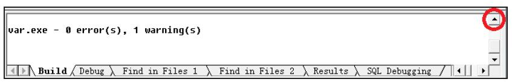
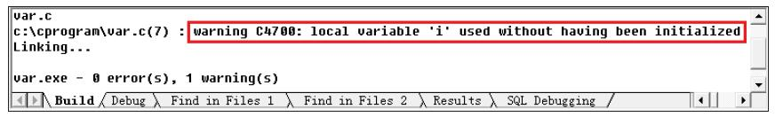

首页 > 编程笔记
C语言变量初始化是必须的吗？不初始化会怎样？
这个问题很重要！实际上前面讲那么多，其中有一个很重要的目的就是为了讲这个知识点。所谓初始化就是“第一次赋值”的意思。我们先来看一个程序：
这时单击图 1 中圆圈标出的向上的箭头，就可以看到警告的原因，如下图所示。
然后对着警告的那一行双击，在程序中就会标出是哪个地方发出警告，或者直接按 F4 键就可以直接在程序中标出警告的地方。如果是 error 报错的话，同样可以这么操作。
但需要注意的是：首先，图 2 中警告的原因只是软件自动检测出来的，不一定是真正警告的原因；其次，标示出来的警告位置也不一定是真正警告的位置。因为软件不可能百分之百的智能化，它只能推测。所以如果在标示出的位置找不到错误，那就往上几行或下几行看看。
现在来看一下它警告的内容是什么：
我们看到警告的原因是，“局部变量 i 使用了，但是没有给它初始化”，也就是说未初始化就使用它了。我们先不管警告，直接链接、执行，看结果是什么（使用 VC++ 6.0）：
i = -858993460
如果i的值是任意值的话，那么再单击一次“执行”显示的应该是另一个值。但事实上不管重新执行多少次，还是这个值，这个值是不变的。下面就来讨论一下原因。
前面讲过，
在上面程序中没有给这个内存单元赋值就把它给输出了，所以问题就出在这里。你只定义了变量 i，但是没有给它赋值并把它输出了。所以关键就是看看 i 里面放的到底是什么。
首先，内存条是一个硬件设备，硬件设备里面要么是 0 要么是 1。计算机肯定得通电，没有电就运行不起来，有电之后它就会通过各种二极管、三极管之类的元器件产生高低电平。
如果电压在某一个范围之上，就认为是 1，在某一个范围之下，就认为是 0。所以 1 就表示高电平，0 就表示低电平，即电压的高或低产生 1 或 0。这时候只有两种状态，要么是 1，要么是 0。所以说 i 里面存放的就是由 0 和 1 组成的代码，不可能里面什么都没有！因为计算机要工作肯定得有电，有电就不可能是空的，有电就会转化成 1 或 0 这样的高低电平。所以硬件上要么是 1 要么是 0，不可能既不是 1 也不是 0，什么都没有！计算机硬件没有那种状态，这也是为什么计算机只能识别二进制的原因。所以变量 i 所关联的那内存单元里面肯定是由 0 和 1 组成的代码。
这里 i 单元虽然没有给它赋值，但这个空间在之前可能被其他软件使用过。比如放电影的时候将电影中的某一部分数据放到了这个单元中。电影看完之后一关闭，这个单元空间就释放了，即操作系统就会回收该内存空间，以便分配给其他软件使用。
但需要注意的是，操作系统虽然回收了该内存空间，但它并不清空该内存空间中遗留下来的数据，这句话很重要。但这样的话就会出现一个问题：以前的软件如果使用过 i 这个空间的话，那么那些垃圾数据还在里面保留着，如果没有初始化，那么它里面就应该是一个随机的垃圾值。但是当我们多次执行的时候发现它不是一个随机的值，而是一个不变的值。这是为什么呢？这个值叫“填充数字”或叫“填充字”。
微软公司在设计 VC++ 这个软件的时候，在它内部添加了一些特殊的处理。即如果发现一个变量里面存放的是一个垃圾值，就认为没有给它赋初值，那么系统就会自动将一个很小的，如 –858993460 这个填充数字给放进去。所以我们看到的结果都是一个不变的值。
那么微软公司为什么要这么设计？首先放入填充数字一定有好处！由于放入填充数字肯定会导致程序运行速度变慢，因为内部要进行处理。所以如果没有好处的话微软公司肯定不会这样设计！
大家想想，如果之前使用i这个空间后遗留下来的数字是 5，那么输出 5 后，你可能以为 i 里面存放的是一个有效的数据。但如果是一个很小的数字，这个数字基本上是很少有人使用的，那么你一看就知道可能是没有初始化。所以这个数字就是提醒你变量没有初始化。
综上所述，任何一个变量在使用之前必须要先对它进行初始化。不初始化的话使用它就没有实际意义了。在实际编程中，习惯上在定义变量的时候就对它进行初始化，这是一个很好的编程习惯。
但是按照 C89 标准，变量的定义只能在程序或复合语句的开头。这样就会有一个问题：“很多在开头定义但到后面才会用到的变量，在定义的时候如何对它们进行初始化呢？”。此时习惯上将它们初始化为0，然后等后面真正用到它们的时候再重新赋值。当然，定义时不初始化也可以，等到后面知道该给它赋什么值的时候再给它赋值也行。但还是建议大家在定义时将它们初始化为 0，养成这个习惯。
#include <stdio.h>
int main(void)
{
int i;
printf("i = %d\n", i);
return 0;
}
这里i没有被赋值，只是定义了一个存储空间。这时输出这个空间的内容，你觉得输出的值会是多少？是一个任意值吗？可以通过编译、链接、执行看一下，如下图所示。

图1：显示一个警告
图1：显示一个警告
这时单击图 1 中圆圈标出的向上的箭头，就可以看到警告的原因，如下图所示。

图2：显示警告的原因
图2：显示警告的原因
然后对着警告的那一行双击，在程序中就会标出是哪个地方发出警告，或者直接按 F4 键就可以直接在程序中标出警告的地方。如果是 error 报错的话，同样可以这么操作。
但需要注意的是：首先，图 2 中警告的原因只是软件自动检测出来的，不一定是真正警告的原因；其次，标示出来的警告位置也不一定是真正警告的位置。因为软件不可能百分之百的智能化，它只能推测。所以如果在标示出的位置找不到错误，那就往上几行或下几行看看。
现在来看一下它警告的内容是什么：
warning C4700: local variable 'i' used without having been initialized
warning 是警告；C4700 表示的是一个地址；local 是“本地的”，就是“局部的”意思。我们看到警告的原因是，“局部变量 i 使用了，但是没有给它初始化”，也就是说未初始化就使用它了。我们先不管警告，直接链接、执行，看结果是什么（使用 VC++ 6.0）：
i = -858993460
如果i的值是任意值的话，那么再单击一次“执行”显示的应该是另一个值。但事实上不管重新执行多少次，还是这个值，这个值是不变的。下面就来讨论一下原因。
前面讲过，
int i;运行的结果是将变量 i 和内存中的某一个单元产生关联。然后变量 i 就代表那个内存单元了，要想操作该内存单元只需要通过变量i就可以了。在上面程序中没有给这个内存单元赋值就把它给输出了，所以问题就出在这里。你只定义了变量 i，但是没有给它赋值并把它输出了。所以关键就是看看 i 里面放的到底是什么。
首先，内存条是一个硬件设备，硬件设备里面要么是 0 要么是 1。计算机肯定得通电，没有电就运行不起来，有电之后它就会通过各种二极管、三极管之类的元器件产生高低电平。
如果电压在某一个范围之上，就认为是 1，在某一个范围之下，就认为是 0。所以 1 就表示高电平，0 就表示低电平，即电压的高或低产生 1 或 0。这时候只有两种状态，要么是 1，要么是 0。所以说 i 里面存放的就是由 0 和 1 组成的代码，不可能里面什么都没有！因为计算机要工作肯定得有电，有电就不可能是空的，有电就会转化成 1 或 0 这样的高低电平。所以硬件上要么是 1 要么是 0，不可能既不是 1 也不是 0，什么都没有！计算机硬件没有那种状态，这也是为什么计算机只能识别二进制的原因。所以变量 i 所关联的那内存单元里面肯定是由 0 和 1 组成的代码。
这里 i 单元虽然没有给它赋值，但这个空间在之前可能被其他软件使用过。比如放电影的时候将电影中的某一部分数据放到了这个单元中。电影看完之后一关闭，这个单元空间就释放了，即操作系统就会回收该内存空间，以便分配给其他软件使用。
但需要注意的是，操作系统虽然回收了该内存空间，但它并不清空该内存空间中遗留下来的数据，这句话很重要。但这样的话就会出现一个问题：以前的软件如果使用过 i 这个空间的话，那么那些垃圾数据还在里面保留着，如果没有初始化，那么它里面就应该是一个随机的垃圾值。但是当我们多次执行的时候发现它不是一个随机的值，而是一个不变的值。这是为什么呢？这个值叫“填充数字”或叫“填充字”。
微软公司在设计 VC++ 这个软件的时候，在它内部添加了一些特殊的处理。即如果发现一个变量里面存放的是一个垃圾值，就认为没有给它赋初值，那么系统就会自动将一个很小的，如 –858993460 这个填充数字给放进去。所以我们看到的结果都是一个不变的值。
那么微软公司为什么要这么设计？首先放入填充数字一定有好处！由于放入填充数字肯定会导致程序运行速度变慢，因为内部要进行处理。所以如果没有好处的话微软公司肯定不会这样设计！
大家想想，如果之前使用i这个空间后遗留下来的数字是 5，那么输出 5 后，你可能以为 i 里面存放的是一个有效的数据。但如果是一个很小的数字，这个数字基本上是很少有人使用的，那么你一看就知道可能是没有初始化。所以这个数字就是提醒你变量没有初始化。
综上所述，任何一个变量在使用之前必须要先对它进行初始化。不初始化的话使用它就没有实际意义了。在实际编程中，习惯上在定义变量的时候就对它进行初始化，这是一个很好的编程习惯。
但是按照 C89 标准，变量的定义只能在程序或复合语句的开头。这样就会有一个问题：“很多在开头定义但到后面才会用到的变量，在定义的时候如何对它们进行初始化呢？”。此时习惯上将它们初始化为0，然后等后面真正用到它们的时候再重新赋值。当然，定义时不初始化也可以，等到后面知道该给它赋什么值的时候再给它赋值也行。但还是建议大家在定义时将它们初始化为 0，养成这个习惯。
关注公众号「站长严长生」，在手机上阅读所有教程，随时随地都能学习。内含一款搜索神器，免费下载全网书籍和视频。

微信扫码关注公众号